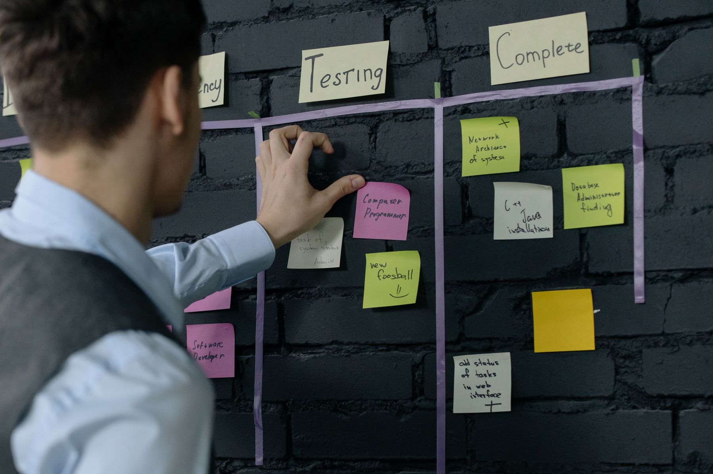

Auftraggeber und Lenkungskreis
Setzen Ziel, Budgetrahmen und Prioritäten für das Vorhaben.
Entscheiden über Umfang, zusätzliche Mittel und wesentliche Eskalationen.Wir klären Auftrag, Verantwortlichkeiten und Entscheidungswege, steuern Termine, Budget, Risiken und Abhängigkeiten und sorgen dafür, dass vereinbarte Ergebnisse geliefert werden. Je nach Lage übernehmen wir die Projektleitung, führen mehrere Teilprojekte zusammen oder stabilisieren ein gefährdetes Vorhaben.
Ein kurzer Überblick reicht. Wir melden uns werktags innerhalb von 24 Stunden.
Meist fehlen ein eindeutiger Auftrag, Personen mit klarer Entscheidungsvollmacht und ein Lieferplan, der zur verfügbaren Kapazität passt. Externe Steuerung hilft, wenn ein wichtiges Vorhaben bereits vom Kurs abweicht oder intern niemand die Gesamtverantwortung übernehmen kann.

Erfolgskriterien fehlen und Änderungen werden aufgenommen, ohne ihre Folgen für Termin, Budget und Kapazität zu entscheiden.
Risiken werden dokumentiert, doch niemand entscheidet über Prioritäten, zusätzliche Mittel oder einen geänderten Liefertermin.
Besprechungen finden statt, aber Produktverantwortung, Reihenfolge der Aufgaben und Entscheidungsspielräume bleiben unklar.
Zu viele Aufgaben laufen parallel und dieselben Schlüsselpersonen werden mehrfach verplant. Termine werden dadurch schon bei der Planung unrealistisch.
Der Umfang richtet sich danach, welche Verantwortung und Kapazität in Ihrer Organisation fehlen.
Eine erfahrene Projektleitung übernimmt befristet die Verantwortung für Termine, Budget, Qualität und Beteiligte.
Wir führen Teilprojekte, Liefertermine und Abhängigkeiten in einer gemeinsamen Steuerung zusammen.
Wir ordnen Produktverantwortung, Aufgaben und Entscheidungsspielräume, damit Teams regelmäßig nutzbare Ergebnisse liefern können.
Bei gefährdeten Vorhaben schaffen wir ein belastbares Lagebild und übernehmen die Steuerung bis Termine, Verantwortlichkeiten und Entscheidungen wieder verlässlich funktionieren.
Jede Phase beantwortet eine andere Steuerungsfrage und endet mit einem dokumentierten Ergebnis.
Wir gleichen Auftrag, Ergebnisse, Termine, Budget, Risiken und Abhängigkeiten mit dem tatsächlichen Stand ab.
Auftraggeber, Projektleitung und Teams erhalten klare Zuständigkeiten, eigene Befugnisse und feste Eskalationswege.
Arbeitspakete, Abhängigkeiten und verfügbare Kapazitäten werden in eine realistische Reihenfolge mit verbindlichen Terminen gebracht.
Wir verfolgen Ergebnisse, bereiten notwendige Entscheidungen vor und lassen Risiken oder Änderungswünsche nicht ungeklärt liegen.
Die interne Nachfolge übernimmt Projektstand, offene Entscheidungen, Termine und Steuerungsunterlagen.
Wir unterstützen vor allem Vorhaben mit vielen Beteiligten, hohem IT-Anteil und kritischen Abhängigkeiten. Frühe Steuerung schützt Zeit, Budget und den geplanten Nutzen.
Wir koordinieren Fachbereiche, IT-Teams, Anbieter und Teilprojekte bis zur Inbetriebnahme und Übergabe.
Anwendungen werden in einer festgelegten Reihenfolge umgestellt, getestet und in den Betrieb überführt.
IT-Systeme und Daten müssen unter hohem Termindruck getrennt oder zusammengeführt werden. Wir steuern die parallelen Arbeitsstränge bis zum Stichtag.
Mehrere Fachbereiche und IT-Teams liefern gemeinsam. Wir bündeln Planung, Entscheidungen und Fortschritt in einer zentralen Steuerung.
Wir ordnen Anforderungen, planen Veröffentlichungen und schaffen eindeutige Produktverantwortung.
Verbindliche Nachweise, Prüfschritte und Stichtage werden in den Lieferplan integriert und nachvollziehbar dokumentiert.
Unabhängig von Branche und Größe muss feststehen, welche Entscheidungen jede Ebene selbst trifft und welche Fragen sofort weitergegeben werden.
Aufträge und Prioritäten gehen an die Projektleitung. Ergebnisse, Risiken und Eskalationen gehen mit einer konkreten Entscheidungsvorlage zurück.
Setzen Ziel, Budgetrahmen und Prioritäten für das Vorhaben.
Entscheiden über Umfang, zusätzliche Mittel und wesentliche Eskalationen.Übersetzt den Auftrag in Lieferplan, Arbeitspakete und Entscheidungsvorlagen.
Koordiniert Abhängigkeiten und legt offene Punkte der zuständigen Ebene vor.Liefern vereinbarte Ergebnisse, prüfen deren Qualität und melden Hindernisse früh.
Entscheiden innerhalb ihres Auftrags und eskalieren, sobald eine Grenze erreicht ist.Prüfschritte, Freigaben und Nachweise werden mit Verantwortlichen und Terminen im Projektplan verankert.
Die Steuerung bleibt schlank und konzentriert sich auf die wenigen Personen, Entscheidungen und Abhängigkeiten, die für die Lieferung entscheidend sind.
Mehrere Bereiche, Anbieter und Gremien werden über gemeinsame Entscheidungsvorlagen und einen zusammengeführten Lieferplan koordiniert.
Was Sie bei üblicher Beratung erleben — und was Sie bei uns bekommen.
Empfehlungen und Statusfolien — die Verantwortung für das Ergebnis bleibt bei Ihnen.
Zeitweise Projektleitung mit voller Verantwortung für Termin, Budget, Qualität und Beteiligte.
Ein starres Standardvorgehen wird auf jedes Vorhaben übertragen.
Klassisch, agil oder kombiniert — das Problem bestimmt das Vorgehen.
Der Status bleibt grün, bis aus einem lösbaren Problem eine teure Rettung geworden ist.
Offener Status, realistischer Plan — und ein ehrliches Wort, wenn ein kontrollierter Stopp das bessere Ergebnis ist.
Mit dem letzten Beratertag geht das Wissen — die Abhängigkeit bleibt.
Ihre interne Projektfähigkeit wird aufgebaut; die Übergabe ist von Anfang an Teil des Vorgehens.
Die Wahl richtet sich nach der Stabilität der Anforderungen, den Abhängigkeiten zwischen Teams und der Geschwindigkeit, mit der nutzbare Ergebnisse geprüft werden können.
Klassisches, phasenweises Vorgehen mit festem Plan und festen Meilensteinen. Stark, wenn Anforderungen stabil sind und der Lieferpfad lang und gut vorhersehbar ist.
Vorgehen für Teams, die in kurzen Zyklen liefern und schnell aus Feedback lernen — mit festen Rollen und Ereignissen. Definiert im offiziellen Scrum Guide von Scrum.org.
Macht den Arbeitsfluss sichtbar und begrenzt die parallel laufenden Aufgaben. Sorgt für stetige Lieferung bei gleichmäßiger Auslastung — gut auch dort, wo viele Anfragen unregelmäßig eintreffen.
Ein Vorgehen, um agiles Arbeiten über viele Teams an einem gemeinsamen Produkt zu koordinieren. Beschrieben von Scaled Agile.
Prozessorientierte Projektmethode mit eindeutigen Rollen, verbindlichen Entscheidungsphasen und einer nachvollziehbaren Begründung — verbreitet in regulierten und öffentlichen Umfeldern. Herausgegeben von AXELOS.
Die Wissenssammlung des Project Management Institute beschreibt gemeinsame Begriffe und Vorgehensweisen für Auftrag, Risiko, Qualität und Beteiligte.
Der erste Schritt ist ein Erstgespräch von 30–45 Minuten. Wir klären Ihre Ausgangslage, die wichtigsten Engpässe und ob CEx der richtige Partner ist. Wenn nicht, verweisen wir auf jemanden, der besser passt.
Erstgespräch anfragen →Drei Beispiele zeigen, wie ein ehrlicher Status, eindeutige Entscheidungen und eine passende Arbeitsweise festgefahrene Projekte wieder steuerbar machen.
Abweichungen entstehen in fast jedem Vorhaben. Steuerbar bleiben sie nur, wenn sie früh benannt, einer verantwortlichen Person zugeordnet und mit einer Entscheidung verbunden werden.
Ein Entwicklungsteam arbeitete zunächst klassisch und litt zunehmend unter starrem Overhead. Der Wechsel erfolgte schrittweise über ein kombiniertes Modell und Kanban. So lernte das Team, Arbeit sichtbar zu machen, Verantwortung zu übernehmen und schrittweise zu liefern. Daraus entstand ein funktionierendes Scrum-Team — ohne abrupten Methodenwechsel.
Bei der Ablösung eines großen Kernsystems fehlten Transparenz, eindeutige Zuständigkeiten und verbindliche Entscheidungen. Nachdem Lücken und Abhängigkeiten offen zugeordnet waren, konnte das Programm geordnet weiterlaufen. Eine funktionierende Fehlerkultur macht Probleme früh sichtbar und ermöglicht rechtzeitiges Handeln.
Ein häufiger Konflikt entsteht, wenn ein Team agil liefern soll, die Organisation aber hierarchisch entscheidet. Die Projektleitung schützt den Arbeitsraum des Teams und übersetzt Strategie und Vorgaben in verständliche Leitplanken. Eskalationen gehen gezielt an die zuständige Ebene. Je länger der Entscheidungsweg, desto wichtiger sind benannte Verantwortliche und verlässliche Termine.
Johannes Reusch und Hans-Helmut "Hannes" Scheel führen CEx gemeinsam. Beide begleiten Mandate mit ihrem Team persönlich. Senior- und Executive-Erfahrung für Ihr Projekt von Anfang bis Ende.